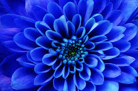
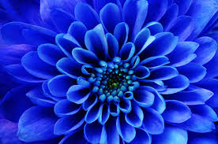
 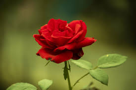
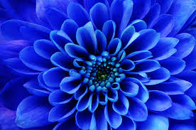
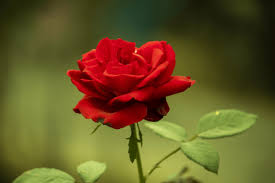
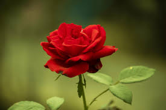
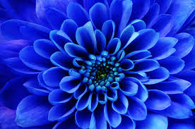
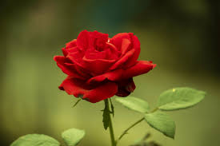
Flowers are one of the most beautiful gifts of nature. They add color, fragrance, and happiness to our lives. Flowers grow in many shapes, sizes, and colors, making the world look bright and lively. They are used to express feelings like love, joy, respect, and sympathy. Flowers also play an important role in nature by helping plants reproduce and supporting bees and butterflies. From decorating homes and gardens to being used in festivals and celebrations, flowers bring beauty an


Cherry Blossom (Sakura): Cherry blossoms are soft pink flowers known for their gentle and calming beauty. They represent new beginnings and the beauty of life.
Tulip: Tulips are colorful and neatly shaped flowers. Their simple design and bright shades make them look sweet and cheerful.
Daisy: Daisies have white petals and a yellow center that looks like a smile. They symbolize innocence, purity, and happiness.
Lily of the Valley: These tiny bell-shaped flowers look very delicate and cute. They represent sweetness, purity, and humility.
Forget-Me-Not: Forget-me-not flowers are small blue blooms that symbolize love, memory, and deep emotions. Their tiny size makes them very adorable.
 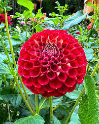
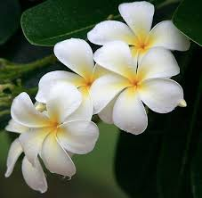
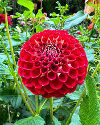
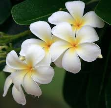
 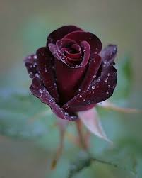
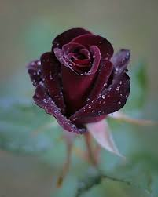
Maked by Virat Singh Powered by chatGPT